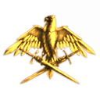
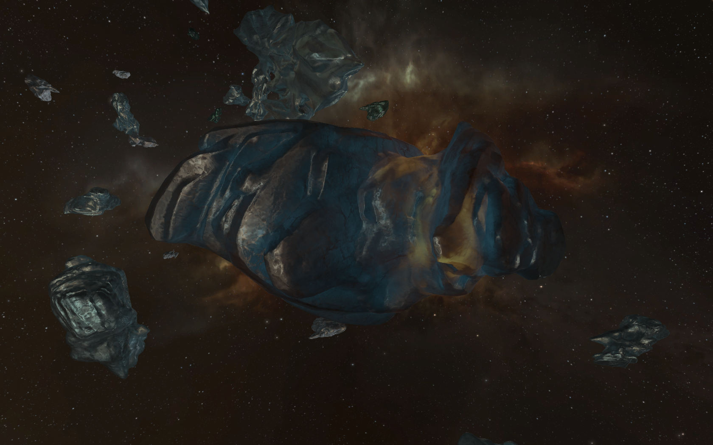
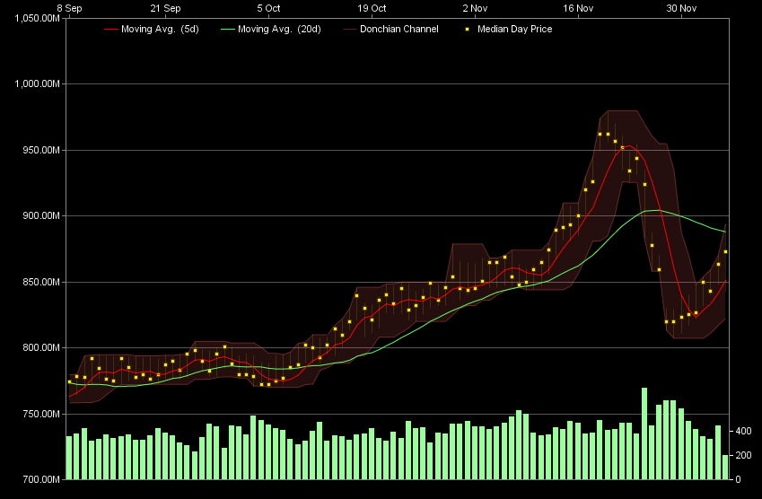
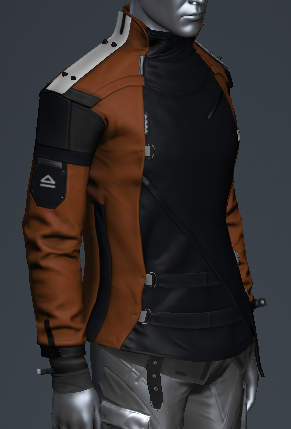

Another two weeks, another round of alliance updates from me. I'm afraid you're going to have to get used to it :)
Welcoming our new members
Pasukan Khas Udara CEO: Ular Belalang
You might have seen them around the local pocket: Pasukan Khas Udara is a group of Hungarian players who have lived in Providence for a while and want to get in on a little more of the action(coalition fleets) without too much hassles or obligations.
Mad Technology CEO: Loprofile
Mad Technology is a group of industrialists who live in Providence, want to be a part of a larger organization and get a small slice of the action.
I hope you all enjoy yourselves and get a better taste of Providence.
Saying goodbye
Alpha Squad Delta backup with Charlie Company CEO: Steve Akoi Aoiki
AZDEC were booted from EPA due to problems that their CEO and a few other members were causing with other coalition members, mainly -7-. Their CEO continued causing problems even after being confronted and told not to. Steve Akoi Aoiki and his alts are not welcome in EPA.
Ospray Corp CEO: Sybegh
Ospray are wormholers who left due to an unfortunate problem: a misunderstanding of what we are about. Everyone who is in the alliance knows that we are laid back and primarily industrialists and explorers. Ospray were expecting 24/7 content from the start upon joining us: we all know this is not happening yet.
Bad news
The war is now ending but that was awful guys: it was a week longer than it should have been and damaged our indy guys quite a bit. I will not be as calm the next time it happens. I'm warning you guys, don't feed the pathetic fuckers kills!
Positives
Ehi, you are a machine, achieving the highest kills in the alliance by over 100, and rightfully earning the first 500M ISK prize that I have given out for PvP. I will run this monthly, along with full SRP for doctrine ships so you can focus on what you do best, shooting stuff. I would also like to congratulate Etin(second place) and Murkar(third place). Moons come first, once we deal with those I will sort out smaller prizes for 2nd and 3rd places.
Word of warning, moon campaign is going to start running with form ups on Saturday and Sunday(6-7th). Max numbers: we need more money to fund cool stuff.
Multiboxing is an important part of EVE's culture. Using multiple accounts is useful in many situations. You can scout the route you are taking or light a cyno without begging someone else to do it for you, do your own hauling, or have some help in combat, either in the form of extra DPS or as fleet boosts. Most of us have at least one alt that they keep logged in along with their main, along with several more alt which are kept offline until we need them, and some of us have dozens of them. This is an average case, but there are some players which take multiboxing to its limits.

Ice fields in Providence are usually descended upon by different kinds of fleets...
Most of us have heard of fleets consisting of 20 or more mining barges descending upon ice systems in high sec, stripping the systems' anomalies of all ice in minutes, leaving nothing for the casual miners, and then moving on to the asteroid belts while waiting for more ice to spawn, leaving the systems devoid of any kind of ore to mine. These fleets, usually considered bot fleets by most players, aren't run by bots. They are run by actual people, which use multiboxing software such as
ISBoxer to run much more instances of EVE than an average player would, and simultaneously control their characters on all of them. This works by broadcasting the commands made in one instance of EVE onto all of the others, making the player control dozens of different accounts with no extra effort(aside from the effort included in setting up the multiboxing software).
Such extreme cases of multiboxing aren't limited to mining: they can also be very useful in combat. There are multiboxers who fly entire fleets of combat ships by themselves: destroyers for ganking freighters in high sec, stealth bombers for dropping on unsuspecting carriers, even supercapitals for taking down sovereignty structures. All of these accounts are almost exclusively subscribed using PLEX. As buying such huge amounts of PLEX is expensive, amounting to tens of billions of ISK monthly, such multiboxers are almost always funded by large null sec coalitions to which such amounts of ISK aren't hard to part with due to the large amount of income coming from their renters and moon mining. This creates a problem: having more players doesn't mean much to the smaller organizations trying to make their first steps in null sec as the already present coalitions have a quite literal and extremely effective force multiplier. This is why multiboxing with input broadcasting is generally frowned upon by the majority of the EVE community.
Up until now, CCP didn't consider input broadcasting important enough to outright ban it: only botting(input automation) was a punishable offense. However, starting with January 1st 2015, CCP will be policing input broadcasting on a two-strike policy much like it does input automation: with a 30 day ban for the first strike and a permanent ban for the second strike. However, players will still be allowed to use such software for various purposes which don't affect the EVE universe, such as automating the login process, resizing and arranging the windows of multiple instances of EVE running on a single computer and syncing the settings between multiple accounts.
How does this affect me?
It most likely doesn't, as I'm not aware of any members of our alliance which take multiboxing to the extents covered by the new policy. You are free to continue using your alts to make your life in New Eden easier. However, these changes might affect your life in New Eden in a different way...

Graph of PLEX prices in Amarr for the last 3 months.
Remember those mining fleets I mentioned above? While they are a major annoyance to casual miners, they also put a lot of raw materials on the market, playing an important part in EVE's industry, so once they are gone, we might see a rise in the prices of basic materials, which could in turn make mining more profitable, but also increase the prices of most ships and modules. This is already visible, as the mineral prices in trade hubs have slightly but noticeably risen. I also mentioned that those accounts are mostly subscribed using PLEX, which is why this change will decrease the demand for PLEX, causing the prices to fall. This change is much more noticeable: on the day before the announcement, PLEX prices started approaching the 1B ISK price, but after the announcement, PLEX prices plummeted down to just above 800M ISK. While the prices have started rising again and are approaching 900M ISK at the moment, this reduction in PLEX prices, even though temporary, is a welcome one to everyone who uses PLEX to pay for his monthly subscription.
Coming to EVE Online in the Rhea release on December 9th
Since the last issue, new features and more details on already announced features have been revealed, along with the full patch notes. Find out all about them here.
Clone grades and skill point loss(except when losing a T3 strategic cruiser) will be removed as was planned. Additionally, the cost of changing your home station will be increased to 100 000 ISK from the current 5600 ISK in order to make it a significant amount that still isn't too taxing. Also, the clone bay window has been cleaned up to better reflect the new cloning system.
Corporation invite changes
A series of improvements to the corp invitation process will be introduced in Rhea. A member of a corporation with the suitable permissions will be able to directly invite a character into the corporation, instead of having to approve an application first. These invitations will show up in the notifications system, and the amount of invites that can be sent out will be throttled in order to prevent spam. Also, players will be able to send an application from anywhere in space, even if they aren't docked, but will only be able to accept an invitation or quit a corporation when they are docked or in a capsule, instead of at any time as it is currently possible.
More eye candy

Male Outlaw jacket(burnt orange).
New ship models for the Incursus, Blackbird and the Moa and their T2 variants will be introduced in Rhea. Also, a number of new clothes will be introduced. First, we have the Outlaw sets consisting of a jacket/coat, pants and boots, all available in both male and female versions and in Blood Raider, Guristas and Sansha colors from the NES. A special
burnt orange version of the Outlaw jacket/coat will also be introduced, and judging by its description, we'll be getting it as a Christmas/New Year gift, courtesy of Intaki Commerce. Second type of clothing will be the Eternity suits, available in five different designs from the NES. Another category of items coming to the NES will be four new dreadnought skins, one for each race.
Physical Based Rendering(PBR) is coming to all ships(except T3 strategic cruisers) and turrets/missile launchers. This is the first pass, and the following ones will see PBR applied to stations, starbase structures and eventually all objects in EVE. The hyped
asteroid belt effects won't be coming in Rhea, as they aren't listed in the patch notes. We can assume they have been delayed for another release or discarded entirely because of their performance impact. However, there is no official word on it yet. What we know is that we will get a beta version of the
new star map, which isn't completely functional at the moment, but already looks much better than the old one, and has the option to be displayed in a window instead of in fullscreen mode only.
UI improvements
The
new UI will have selectable color themes and the option to match the theme to the ship you are currently flying. The blur effect and background transparency will be configurable. The killmail UI will be slightly modified to improve the visibility of nested items and make copying the external kill link easier. Health bars will be visible for drones in your drone bay, and there will be a "find group" icon in the market window, allowing you to quickly browse similar items in the market tree. Also, the notification system will be expanded to include killmails and contracts, and opt-in
manual ship control is being introduced.
101 new shattered wormholes will become available in Rhea, including the hub system of Thera, the first wormhole system with NPC stations. Aside from those wormholes, we will also see a new type of sleeper drones roaming outside of wormhole space: the Circadian Seeker. Not much is known about them, except that they are somehow connected to the unidentified sites which have started popping up around New Eden: they contain a gigantic cloaked structure whose cloaking device seems to be malfunctioning. The one thing we do know is that they are busy scanning various objects they encounter roaming around systems. They appear to be peaceful, but be careful if you decide to engage them. Related to wormholes, the hacking minigame will get a distance indicator which will show you how close you are to something beneficial. This might make cracking harder relic/data sites much easier.
Balancing of laser turrets
The main change is the change to Scorch, the T2 long-range crystal for pulse lasers. The optimal range bonus on all Scorch crystals has been reduced from 50% to 40%, with the base optimal range on all pulse lasers being increased by 5%. This results in 2% less optimal range when using Scorch, and more range when using any other crystal. Additionally, the fallof range has been increased from 25% to 100% on all pulse laser, depending on the type. The second change, presumably because of the release of the Confessor, is to small beam lasers. They will get a 20% increase in DPS(with increased alpha and identical cap usage), 10% bonus to optimal range, 10% decrease in tracking speed, less falloff range and lower CPU fitting requirements.
New ships
Rhea brings us two new ships: the Bowhead and the Confessor. The Bowhead is an ORE freighter, specialized in moving large amounts of assembled ships. If it is destroyed, the ships in its ship maintenance bay will drop in the wreck(depending on the usual 50-50 chance) and you will be able to eject them from the wreck and board them. The same rule will now also apply to all other ships with a ship maintenance bay(Orcas, Rorquals, carriers...). It is expected to cost 20-30% less than other freighters, so it might see a lot of use, especially in high sec.
ORE Freighter Skill Bonus per level:
5% bonus to ship maintenance array capacity per level
5% bonus to inertia modifier per level
Role Bonus:
90% reduction in jump fatigue generation
Slot Layout: 3M, 3L, 3R
Fitting: 1350 PWG, 215 CPU
Defense (shields / armor / hull): 21000 / 11000 / 39500
Capacitor (amount / recharge): 3900 / 235s
Mobility (max velocity / agility / mass): 65 / .0675 / 640.000.000
Drones (bandwidth / bay): 0 / 0
Targeting (max targeting range / Scan Resolution / Max Locked targets): 51.5km / 45 / 3
Sensor strength: 12
Signature radius: 3200
Cargo Bay: 4000m3
Ship Maintenance Bay: 1.300.000m3
The Confessor is the first T3 tactical destroyer, capable of switching between three distinctive modes on the fly. It will benefit from a new skill, Amarr Tactical Destroyer, which requires Amarr Destroyer level V. It is expected to cost less than 40M ISK.
Amarr Tactical Destroyer Bonuses Per Level:
10% bonus to Small Energy Turret damage
10% reduction in Small Energy Turret capacitor usage
5% reduction in heat damage generated by modules
Role Bonus:
95% reduction in Scan Probe Launcher CPU requirements
Additional bonuses are available when one of three Tactical Destroyer Modes are active. Modes may be changed no more than once every 10 seconds.
Defense Mode:
33.3% bonus to all armor resistances whole Defense Mode is active
33.3% reduction in ship signature radius while Defense Mode is active
Propulsion Mode:
66.6% bonus to maximum velocity while Propulsion Mode is active
33.3% bonus to ship inertia modifier while Propulsion Mode is active
Sharpshooter Mode:
66.6% bonus to Small Energy Turret optimal range while Sharpshooter Mode is active
100% bonus to sensor strength, scan resolution and targeting range while Sharpshooter Mode is active
Slot layout: 7 H, 3 M, 5 L, 6 turrets , 0 launchers
3 Rig Slots, 400 Calibration
Fittings: 80 PWG, 190 CPU
Defense (shields / armor / hull) : 600 / 800 / 750
Base shield resistances (EM/Therm/Kin/Exp): 0 / 20 / 55 / 75
Base armor resistances (EM/Therm/Kin/Exp): 50 / 35 / 43.75 / 60
Capacitor (amount / recharge rate / average cap per second): 800 / 300s / 2.667
Mobility (max velocity / agility / mass / warp speed / align time): 280 / 2.15 / 2,400,000 / 4.5 / 7.15s
Drones (bandwidth / bay): 0 / 0
Targeting (max targeting range / Scan Resolution / Max Locked targets): 45km / 350 / 7
Sensor strength: 13 Radar
Signature radius: 60
Cargo capacity: 400
Atron roam: Making new friends and blowing them up
On Saturday, November 29th, around 23:00 EVE time, Murkar Omaristos started an Atron roam. Atrons, aka Derptrons, are great frigates. Their speed and low skill requirements make them ideal for suicide roams. They can also deal up to 200 DPS each, but have little or no tank. It doesn't matter, as these Derptrons cost almost nothing. A fit with T2 guns and some extra T2 modules will only cost around 5M ISK. If you decide to only use meta modules, the cost of a fitted Derptron can be less than 1M ISK. In large numbers, they can apply thousands of DPS, enough to shred even the toughest targets to pieces in seconds.
Fitted Derptrons were handed out for free at F-YH5B, so 5 members of our alliance joined the fleet, along with 5 more players from other alliances. Aside from the Derptrons, we also got a Talwar and a Flycatcher to join us. Once ready, we set
6X7-JO as our destination. On our way there, in WD-VTV, we found our first kill. A Scythe was quickly destroyed by our Derptrons, along with its
pod. After scooping up the corpse and looting the wreck, we spent the next several minutes in the system looking for more targets, when an Occator jumped into the system. Aware that it might be bait, we decided to engage it anyway. What's the worst thing that could possibly happen?
The worst thing possible did happen. Just as we started picking at the Occator's armor, a HERO fleet consisting of assorted frigates, destroyers and cruisers jumped into the system, forcing us to retreat and quickly destroying the ships that weren't fast enough to warp out. We lost a
Talwar, a Flycatcher, two Derptrons and a single empty pod. After the losses, we decided to reform back at F-YH5B.
Back at F-YH5B, we had a couple more players join us. This time, we set our destination to CB4-Q2, and went out, Derptrons only this time. We had more luck: soon after leaving, in the system TA3T-3, we got two more kills. The first one was a
Condor and its pod, and the second one was a
Merlin. We didn't immediately get the pod, as it managed to warp out, but due to some smart piloting by some of our members, they managed to follow it to the celestial it warped to, and popped the
pod as well. After that, we had a small friendly fire incident. We crossed paths with another blue fleet, but one of its members,
Lee Mcgee, was neutral to all of us. This led to some of our more trigger-happy fleet members assuming he is KOS, without actually consulting the
KOS checker. As they activated their scrams and disruptors, the rest of the fleet, hungry for kills, followed in suit and started attacking his Omen as well. Soon after we started attacking it, we were alerted by the other fleet that he is blue, and stopped firing. What can you say, NRDS at its finest.
Moving on, we found a Hound in KA6D-K. Unfortunately, as it launched a bomb, we warped off instead of engaging it. Only one of our members failed to warp away on time,
dying to the bomb. Heading deeper into HERO territory, we found one more kill, this one in MB-NKE: a cyno Ibis and its
pod. We stored the cyno that dropped from it, just in case we can somehow use it. A minute later, a Venture jumped into the system, but we didn't manage to land enough disruptors on it before it managed to warp away.
Next, we headed towards
RNF-YH. It is a dead-end system and a popular ratting hub, and we were hoping to kill a ratting battleship or T3. After playing around with a Sabre on the gate to the system, we headed inside. After entering, the first thing we noticed was that the gate is heavily bubbled. The next thing we noticed was a Deimos inside the bubbles, which we tried attacking, but couldn't break its tank quick enough. As more hostiles warped in, we tried to burn out of the bubbles and warp to a safe spot. Only
one of us wasn't able to get out in time. Once we regrouped at the safe spot, we started scouting the system for easy kills, as it was obvious that the locals were well aware of our presence, and we couldn't kill something as big as a battleship before reinforcements arrived. Moments later, we found ourselves a target: a
Merlin. Even though it was sitting on the station, we managed to kill it along with its pod. We warped back to the safe spot with no losses.
Back at the safe spot, we noticed combat probes on D-Scan. They were trying to probe us down. First, we warped between safe spots in order to stop them from probing us down, but we soon got tired of it, and decided to stay in one place and wait for them to probe us down. It paid off: a small fleet warped to us, and managed to kill five of our ships, but not before we took down their
Sabre. Some of us warping away in our ships, some in our pods, we warped to another safe spot, and waited once again for them to probe us down.
Soon enough, they did. Once they landed on grid, most of us decided to engage a Dramiel, but I chose to go after a Maulus which warped right on top of me instead. I quickly killed the
untanked frigate, but I missed the pod. While the rest of our fleet was destroyed by the hostiles, I gained some distance from them while chasing the Maulus and managed to warp away just as a Proteus started firing at me with its railguns. Being the only one that escaped with his ship intact, I decided to initiate the self destruct timer on my ship. After it exploded, I did the same for my pod, all of it while having an emotional conversation with the locals. The timer was ticking down: 29 seconds, 19 seconds, 9 seconds...
Back at F-YH5B, I upgraded my clone and started thinking about what to do next, when I noticed something strange about my wallet balance. I don't remember having 800M in my wallet...
So, to sum it up: equal amounts of ISK were destroyed/lost, lots of fun was had by everyone involved, and 500M ISK ended up in my wallet. Op success! If you want to, read the full local and fleet chat logs below.
Local chat log:[2014.11.29 20:50:21] EVE System > Channel changed to Local : F-YH5B
[2014.11.29 23:46:28] EVE System > Channel changed to Local : LF-2KP
[2014.11.29 23:47:19] EVE System > Channel changed to Local : MVCJ-E
[2014.11.29 23:48:36] EVE System > Channel changed to Local : 2-TEGJ
[2014.11.29 23:49:13] EVE System > Channel changed to Local : MH9C-S
[2014.11.29 23:50:28] EVE System > Channel changed to Local : T-RPFU
[2014.11.29 23:50:54] EVE System > Channel changed to Local : D-GTMI
[2014.11.29 23:51:51] EVE System > Channel changed to Local : F9E-KX
[2014.11.29 23:55:15] EVE System > Channel changed to Local : SV5-8N
[2014.11.29 23:56:59] EVE System > Channel changed to Local : WD-VTV
[2014.11.30 00:01:08] Insomnia Gaming > wait
[2014.11.30 00:04:46] EVE System > Channel changed to Local : SV5-8N
[2014.11.30 00:09:58] EVE System > Channel changed to Local : WD-VTV
[2014.11.30 00:11:54] EVE System > Channel changed to Local : 9KOE-A
[2014.11.30 00:12:48] EVE System > Channel changed to Local : WD-VTV
[2014.11.30 00:16:12] Serendipity Raine > gf
[2014.11.30 00:16:14] Eris en Chasteaux > gf
[2014.11.30 00:16:16] Plikt Umangiar > gf
[2014.11.30 00:16:19] Edwarde Teache > gf
[2014.11.30 00:16:21] Steven Ellecone > gf
[2014.11.30 00:16:47] Wing Grau > gf
[2014.11.30 00:17:06] Murkar Omaristos > gf
[2014.11.30 00:19:14] EVE System > Channel changed to Local : SV5-8N
[2014.11.30 00:19:52] EVE System > Channel changed to Local : F9E-KX
[2014.11.30 00:20:33] EVE System > Channel changed to Local : D-GTMI
[2014.11.30 00:21:15] EVE System > Channel changed to Local : T-RPFU
[2014.11.30 00:21:40] EVE System > Channel changed to Local : MH9C-S
[2014.11.30 00:22:15] EVE System > Channel changed to Local : 2-TEGJ
[2014.11.30 00:22:52] EVE System > Channel changed to Local : K1I1-J
[2014.11.30 00:23:30] Gumia Shardani > O/
[2014.11.30 00:23:35] EVE System > Channel changed to Local : LF-2KP
[2014.11.30 00:24:16] EVE System > Channel changed to Local : F-YH5B
[2014.11.30 00:33:30] EVE System > Channel changed to Local : 8P9-BM
[2014.11.30 00:34:12] EVE System > Channel changed to Local : 3GXF-U
[2014.11.30 00:34:53] EVE System > Channel changed to Local : 49GC-R
[2014.11.30 00:35:44] EVE System > Channel changed to Local : 9UY4-H
[2014.11.30 00:37:00] EVE System > Channel changed to Local : ZQ-Z3Y
[2014.11.30 00:38:24] Dom Aumer > omen navy, rputure, ranis on GA gate in Ta3t
[2014.11.30 00:38:48] EVE System > Channel changed to Local : G-AOTH
[2014.11.30 00:41:01] EVE System > Channel changed to Local : TA3T-3
[2014.11.30 00:44:29] Rondait Fathilfore > well
[2014.11.30 00:44:32] Rondait Fathilfore > crap
[2014.11.30 00:45:26] Slyder > ;)
[2014.11.30 00:45:53] Murkar Omaristos > sup hans
[2014.11.30 00:46:02] Hans Zwaardhandler > Eyyy
[2014.11.30 00:46:10] Murkar Omaristos > we brought t1s this time
[2014.11.30 00:46:12] Hans Zwaardhandler > I was just out for eggs you see
[2014.11.30 00:46:47] Murkar Omaristos > They don't sell eggs in catch?
[2014.11.30 00:46:51] Sluh Bombers > sebo tron ftw
[2014.11.30 00:47:01] Hans Zwaardhandler > Solo is dead
[2014.11.30 00:47:07] Hans Zwaardhandler > RIP solo pvp
[2014.11.30 00:47:27] Murkar Omaristos > o/
[2014.11.30 00:47:28] Hans Zwaardhandler > Good work though, steadily chipping away at the amount of people provi needs to fight me
[2014.11.30 00:47:34] Hans Zwaardhandler > Only... 13 this time?
[2014.11.30 00:48:10] Yazzinra > dont shoot lee
[2014.11.30 00:48:14] Doc Annages > BLUE
[2014.11.30 00:48:16] Yazzinra > stop shooting lee hes ina blue fleet
[2014.11.30 00:48:41] i13 Offspring Hallorano > Lee is blue
[2014.11.30 00:51:40] EVE System > Channel changed to Local : J6QB-P
[2014.11.30 00:52:30] EVE System > Channel changed to Local : KA6D-K
[2014.11.30 00:53:37] Destron Aurilen > stelios, can u bring ur widow out for frigs and dessys to kill again?
[2014.11.30 00:53:51] Destron Aurilen > :P
[2014.11.30 00:54:23] Drago Anasazy > look its provi nerds and cowards
[2014.11.30 00:54:43] stelios102 > Lol everything is so personal
[2014.11.30 00:54:49] Drago Anasazy > jjjjjjjiiiiiiiiiiiihhaaaaaa
[2014.11.30 00:54:53] stelios102 > Destron this is a game. Don't let it ruin your day
[2014.11.30 00:55:25] Destron Aurilen > dont take it personally, its a joke
[2014.11.30 00:56:36] EVE System > Channel changed to Local : J6QB-P
[2014.11.30 00:57:23] EVE System > Channel changed to Local : KA6D-K
[2014.11.30 00:57:29] Phalanx Saturnus > Nice
[2014.11.30 00:58:31] EVE System > Channel changed to Local : CBL-XP
[2014.11.30 00:59:12] EVE System > Channel changed to Local : CB4-Q2
[2014.11.30 00:59:57] EVE System > Channel changed to Local : EX-0LQ
[2014.11.30 01:04:59] EVE System > Channel changed to Local : KW-I6T
[2014.11.30 01:05:36] EVE System > Channel changed to Local : W9-DID
[2014.11.30 01:06:41] EVE System > Channel changed to Local : GE-94X
[2014.11.30 01:07:34] EVE System > Channel changed to Local : S-U2VD
[2014.11.30 01:08:44] EVE System > Channel changed to Local : GMLH-K
[2014.11.30 01:09:47] EVE System > Channel changed to Local : 2J-WJY
[2014.11.30 01:16:29] EVE System > Channel changed to Local : ZXIC-7
[2014.11.30 01:17:16] EVE System > Channel changed to Local : F4R2-Q
[2014.11.30 01:17:57] EVE System > Channel changed to Local : WLAR-J
[2014.11.30 01:19:27] EVE System > Channel changed to Local : MB-NKE
[2014.11.30 01:19:47] EVE System > Channel changed to Local : WLAR-J
[2014.11.30 01:20:50] EVE System > Channel changed to Local : MB-NKE
[2014.11.30 01:25:20] EVE System > Channel changed to Local : G-7WUF
[2014.11.30 01:29:56] EVE System > Channel changed to Local : RNF-YH
[2014.11.30 01:31:43] ADoG smifff > gf
[2014.11.30 01:31:46] Destron Aurilen > gf
[2014.11.30 01:31:50] Murkar Omaristos > gf
[2014.11.30 01:34:14] FroHawK Sarn > 500m to leave
[2014.11.30 01:34:23] Carbon Alabel > lol
[2014.11.30 01:34:26] Murkar Omaristos > says who
[2014.11.30 01:34:29] Emonster 808 > lol
[2014.11.30 01:34:31] FroHawK Sarn > Says us
[2014.11.30 01:34:32] ADoG smifff > dude our ships are 500k XD
[2014.11.30 01:34:39] FroHawK Sarn > That is the offer
[2014.11.30 01:34:47] Murkar Omaristos > 500 million to suck my....o sry, I didn't mean that
[2014.11.30 01:34:50] Ender Tiberus > XD
[2014.11.30 01:34:51] Sluh Bombers > that enuf?
[2014.11.30 01:34:52] Kelnon Tealth > No, Frohawk, he has a point. 1B to leave.
[2014.11.30 01:34:53] ADoG smifff > XD
[2014.11.30 01:34:57] Carbon Alabel > We'll give you 10 ISK.
[2014.11.30 01:35:03] FroHawK Sarn > good point mr tealth
[2014.11.30 01:35:12] Sluh Bombers > gave him 1isk that should work
[2014.11.30 01:35:20] Wing Grau > C'mon guys..they need the cash. What can we put together
[2014.11.30 01:35:27] Kelnon Tealth > ^
[2014.11.30 01:35:31] Kelnon Tealth > Can confirm, need cash
[2014.11.30 01:35:34] Vendroiken > Give me all your ISK and i'll consider not calling the cops
[2014.11.30 01:36:06] Colonel O'neil Tauri > http://i.imgur.com/q3e87zR.jpg
[2014.11.30 01:36:17] Sluh Bombers > LOL^
[2014.11.30 01:36:21] Ender Tiberus > Coming for that booty
[2014.11.30 01:36:29] Colonel O'neil Tauri > http://i.imgur.com/xhXLJ1w.gif
[2014.11.30 01:36:32] Sluh Bombers > that is great sir
[2014.11.30 01:36:35] Skayarck Arran > http://i.imgur.com/9K7AmY9.gif
[2014.11.30 01:36:43] Slyder > http://img4.picload.org/image/oodpdga/ayy_gun_fun.gif
[2014.11.30 01:36:52] Kelnon Tealth > We'd be happy to help you get home quickly
[2014.11.30 01:36:54] Colonel O'neil Tauri > --=T=T=T=�-�=�-�=�=�-�-���=�=�-�����T����-�����-����L�T�������L=�����=���---����--L----�T���----�����=�--L�-���=�---���T�=�-=T�����=�TT=T=��=��-����-�������=����T���������L=-L-L�-L-L�=��-
[2014.11.30 01:37:00] Ender Tiberus > http://i.imgur.com/GeKlEMV.gif
[2014.11.30 01:37:13] Sluh Bombers > http://i.imgur.com/sAvGJPB.gif
[2014.11.30 01:37:27] Skayarck Arran > http://new2.fjcdn.com/thumbnails/comments/5306952+_3e1e7d548a784aaf307932b60ceba959.gif
[2014.11.30 01:37:45] Destron Aurilen > did we send enough?
[2014.11.30 01:37:52] Slyder > http://img.4plebs.org/boards/tg/image/1397/20/1397203491858.gif
[2014.11.30 01:37:53] Vendroiken > not even close m8
[2014.11.30 01:37:54] Ender Tiberus > Station fees http://i.imgur.com/az1I6Tp.gif
[2014.11.30 01:37:58] Kelnon Tealth > Destron Aurilen Only one way to find out
[2014.11.30 01:38:01] Vendroiken > i said ALL your ISK
[2014.11.30 01:38:12] Destron Aurilen > 2014.11.30 01:35:51 Player Donation -1.00 ISK 5,685,925,179.27 ISK [r] Destron Aurilen deposited cash into FroHawK Sarn's account u sure?
[2014.11.30 01:38:18] Vendroiken > I have J3B on speed dial.
[2014.11.30 01:38:18] Skayarck Arran > http://i.imgur.com/IYxAyrz.gif
[2014.11.30 01:38:19] Hitomi Chent-Shi > http://i.imgur.com/Om81xvs.gif
[2014.11.30 01:38:39] Skayarck Arran > http://puu.sh/9r3jI/0dd0ce395f.gif
[2014.11.30 01:38:44] Slyder > http://i.imgur.com/ytKagow.gif
[2014.11.30 01:38:46] Ender Tiberus > http://i.imgur.com/fCg8dXZ.gif
[2014.11.30 01:38:46] ADoG smifff > http://weknowmemes.com/wp-content/uploads/2014/03/swiggity-swooty-gif.gif
[2014.11.30 01:38:49] Ender Tiberus > http://i.imgur.com/F8gN3zE.gifv
[2014.11.30 01:39:05] Skayarck Arran > http://i.imgur.com/DGe68vN.gif
[2014.11.30 01:39:11] Carbon Alabel > Could you let us dock?
[2014.11.30 01:39:18] Carbon Alabel > We need to fit a cyno.
[2014.11.30 01:39:34] Vendroiken > should have thought of that _before_ you jumped in here.
[2014.11.30 01:39:38] Kelnon Tealth > I'll jetcan you a cyno a LO if you'll fight
[2014.11.30 01:39:42] Skayarck Arran > I will jet can one
[2014.11.30 01:39:50] Hitomi Chent-Shi > Gotta Go!!
[2014.11.30 01:39:51] Destron Aurilen > we looted one earlier
[2014.11.30 01:40:57] Sluh Bombers > wow great station name
[2014.11.30 01:40:58] ADoG smifff > ty come again :)
[2014.11.30 01:41:27] ADoG smifff > Kill: Ender Tiberus (Merlin)
[2014.11.30 01:41:36] Algis Akiwa > I wasn't even supposed to be here today!
[2014.11.30 01:42:32] ADoG smifff > ?(?_?)?
[2014.11.30 01:43:21] FroHawK Sarn > SO
[2014.11.30 01:43:23] FroHawK Sarn > 1b
[2014.11.30 01:43:24] FroHawK Sarn > to leave
[2014.11.30 01:43:28] Slyder > http://i.imgur.com/f3r65cm.gif
[2014.11.30 01:43:32] Carbon Alabel > 10 ISK!
[2014.11.30 01:43:39] Emonster 808 > we only take payment first
[2014.11.30 01:43:50] Carbon Alabel > Almost 1 ISK per ship, it's a good deal.
[2014.11.30 01:43:57] Destron Aurilen > 1 bil sent to murkar and we leave
[2014.11.30 01:43:58] ADoG smifff > https://i.imgur.com/aSXKGWv.gif
[2014.11.30 01:43:59] Emonster 808 > we will leave if you pay us
[2014.11.30 01:44:00] Slyder > http://imgdonkey.com/big/MFF3Rm5XSw/how-i-feel-half-the-time-when-playing-eve.gif
[2014.11.30 01:44:13] Murkar Omaristos > that sounds loke a good deal
[2014.11.30 01:44:14] Kelnon Tealth > Destron Aurilen 1 sent to Kelnon and we'll let you leave
[2014.11.30 01:44:20] Vendroiken > we don't want tyou to leave - we want to kill you
[2014.11.30 01:44:28] Kelnon Tealth > ^
[2014.11.30 01:44:36] ADoG smifff > Vendroiken well then dont we all want the same thing :)
[2014.11.30 01:44:49] adam absher > We dont want to kill you we only wish to play Knifie spoonie
[2014.11.30 01:44:58] Vendroiken > then come get some
[2014.11.30 01:44:59] Kelnon Tealth > ADoG smifff We're sitting here waiting for you to fight
[2014.11.30 01:45:07] Vendroiken > stop blueballing me
[2014.11.30 01:45:08] Captain James Sparrow > Honorable 1v1 at the sun?
[2014.11.30 01:45:09] Slyder > http://i.imgur.com/JAW8Wqf.gif
[2014.11.30 01:45:11] Vendroiken > i can't take it anymore
[2014.11.30 01:45:12] ADoG smifff > Kelnon Tealth were sitting here waiting for a idiot
[2014.11.30 01:45:15] Murkar Omaristos > Kill: Ender Tiberus (Merlin)
[2014.11.30 01:45:28] Sluh Bombers > https://www.youtube.com/watch?v=F-glHAzXi_M
[2014.11.30 01:45:34] Kelnon Tealth > Kill: Thijmen Otsolen (Atron)
[2014.11.30 01:45:36] Emonster 808 > afk making cup of tea
[2014.11.30 01:45:45] Kelnon Tealth > #stilliskpositive
[2014.11.30 01:45:54] Captain James Sparrow > Emonster 808 what tea
[2014.11.30 01:45:56] Captain James Sparrow > WHAT TEA
[2014.11.30 01:46:30] Emonster 808 > yorkshire
[2014.11.30 01:46:37] Slyder > PUDDING!
[2014.11.30 01:46:50] Destron Aurilen > best kind in my opinion
[2014.11.30 01:46:55] Destron Aurilen > yorkshire tea
[2014.11.30 01:46:57] GUS Gustafson > http://i.imgur.com/Gmlcu.gif
[2014.11.30 01:46:58] Emonster 808 > indeed
[2014.11.30 01:47:11] Algis Akiwa > MEAKE ME SOME GODDAM TEA TOO!
[2014.11.30 01:47:20] Captain James Sparrow > i would also like some tea
[2014.11.30 01:47:26] Carbon Alabel > Only if you pay us.
[2014.11.30 01:47:38] GUS Gustafson > http://24.media.tumblr.com/tumblr_lyn1952VPc1qdlh1io1_r2_400.gif
[2014.11.30 01:47:40] Algis Akiwa > How much for a cup?
[2014.11.30 01:47:50] Murkar Omaristos > 1bil for us to leave
[2014.11.30 01:47:52] Emonster 808 > i have a box of 20 tea bags
[2014.11.30 01:47:53] ADoG smifff > http://giphy.com/gifs/fresh-prince-of-bel-air-will-smith-mc-hammer-rjSGovV1kg5TW
[2014.11.30 01:48:00] Carbon Alabel > Eh, I'll go with 10M.
[2014.11.30 01:48:01] Vendroiken > we don't pay you. you pay US
[2014.11.30 01:49:15] GUS Gustafson > https://imagizer.imageshack.us/v2/1176x751q90/908/8AS3X0.jpg
[2014.11.30 01:49:41] Slyder > dat ass do
[2014.11.30 01:49:55] GUS Gustafson > cookies and tea
[2014.11.30 01:51:03] Kelnon Tealth > Burn out the MWD or run out of cap?
[2014.11.30 01:51:09] ADoG smifff > YOLO!!!!!!!!
[2014.11.30 01:51:19] Sluh Bombers > burnt it out
[2014.11.30 01:51:24] Sluh Bombers > gf plz express me
[2014.11.30 01:52:01] Sluh Bombers > bye bye sabre
[2014.11.30 01:52:08] ADoG smifff > ty come again
[2014.11.30 01:52:14] Slyder > gf
[2014.11.30 01:52:24] Murkar Omaristos > 1.5bil for us to leave now
[2014.11.30 01:52:33] ADoG smifff > good trade :)
[2014.11.30 01:53:01] Super Canadian > Nobody likes Sabres :(
[2014.11.30 01:53:03] Kelnon Tealth > Murkar Omaristos Correct, that is the new price for us to let you out
[2014.11.30 01:53:22] Murkar Omaristos > I think you have that backwards, we jsut killed your bubbler with atrons
[2014.11.30 01:53:26] Murkar Omaristos > *Just
[2014.11.30 01:53:36] FroHawK Sarn > good job
[2014.11.30 01:53:50] Murkar Omaristos > gf though
[2014.11.30 01:54:05] Super Canadian > you act like i dont have 5 spares :D
[2014.11.30 01:54:06] FroHawK Sarn > obviously not
[2014.11.30 01:54:10] FroHawK Sarn > becaus eyou are shit talking in local
[2014.11.30 01:54:29] Destron Aurilen > we do, we can just come back
[2014.11.30 01:54:33] Murkar Omaristos > aaaah ok sry yer, 1.5bil for us to leave
[2014.11.30 01:54:35] Murkar Omaristos > got it
[2014.11.30 01:54:41] FroHawK Sarn > Thats not shit talking
[2014.11.30 01:54:56] FroHawK Sarn > Thats what you have to bribe us to leave
[2014.11.30 01:55:04] FroHawK Sarn > but you are CVA
[2014.11.30 01:55:10] FroHawK Sarn > so running is your strong suit
[2014.11.30 01:55:23] ADoG smifff > ugh most of us arnt cva
[2014.11.30 01:55:30] Murkar Omaristos > Eternal Pretorian Alliance
[2014.11.30 01:55:35] FroHawK Sarn > but you are blued to cva
[2014.11.30 01:55:37] FroHawK Sarn > same thing
[2014.11.30 01:55:46] GUS Gustafson > http://imgur.com/gallery/VWiT1lo
[2014.11.30 01:55:51] FroHawK Sarn > rather me just call you provi?
[2014.11.30 01:55:55] ADoG smifff > Elemental Tide
[2014.11.30 01:55:58] FroHawK Sarn > cause we welped a provi fleet last night
[2014.11.30 01:56:17] FroHawK Sarn > but they were mannered about their beating
[2014.11.30 01:58:00] Algis Akiwa > That's all nice and dandy, but what aboot my goddam tea?
[2014.11.30 01:58:17] Carbon Alabel > It's gone.
[2014.11.30 01:58:22] Carbon Alabel > I drank it.
[2014.11.30 01:59:01] Algis Akiwa > Fuck Carbon... quit hogging all the tea ya british bastard.
[2014.11.30 01:59:24] Murkar Omaristos > o/
[2014.11.30 01:59:54] Murkar Omaristos > thx for holding so I could unplug my implant
[2014.11.30 01:59:55] Carbon Alabel > I'M NOT BRITISH YOU RACIST!!!
[2014.11.30 02:00:27] ADoG smifff > not quite my friend :)
[2014.11.30 02:06:38] ADoG smifff > gf
[2014.11.30 02:07:27] Zylnarius > Gf, op succes
[2014.11.30 02:07:43] FroHawK Sarn > gf
[2014.11.30 02:07:44] Hitomi Chent-Shi > wheres that last atron
[2014.11.30 02:07:49] Edriar > gf
[2014.11.30 02:07:49] Captain James Sparrow > gf
[2014.11.30 02:07:49] Aya Nova > gf
[2014.11.30 02:07:51] Skayarck Arran > gf
[2014.11.30 02:07:51] adam absher > gf
[2014.11.30 02:07:58] Skayarck Arran > thanks for fight
[2014.11.30 02:08:11] Wing Grau > gf chaps
[2014.11.30 02:10:43] FroHawK Sarn > Carbon Alabel did you just self distruct?
[2014.11.30 02:10:58] Carbon Alabel > Yes.
[2014.11.30 02:11:05] FroHawK Sarn > Well then
[2014.11.30 02:11:33] Carbon Alabel > It was fun.
[2014.11.30 02:11:45] Carbon Alabel > See you tomorow.
[2014.11.30 02:11:50] FroHawK Sarn > see ya
[2014.11.30 02:11:50] Carbon Alabel > Same place, same time?
[2014.11.30 02:11:54] FroHawK Sarn > yeah
[2014.11.30 02:11:57] Edriar > Bye o/
[2014.11.30 02:11:57] Skayarck Arran > <3
[2014.11.30 02:11:58] FroHawK Sarn > bring dinner too
[2014.11.30 02:12:02] Carbon Alabel > <3
[2014.11.30 02:12:09] Edriar > or at least a 6 pack
[2014.11.30 02:12:10] adam absher > and hookers
[2014.11.30 02:12:16] Carbon Alabel > Take good care of my corpse.
[2014.11.30 02:12:24] Carbon Alabel > Bye.
[2014.11.30 02:12:32] EVE System > Channel changed to Local : F-YH5B
Fleet chat log:[2014.11.29 23:10:48] Murkar Omaristos > o/
[2014.11.29 23:10:58] Zylnarius > 07
[2014.11.29 23:11:27] ADoG smifff > omw to F-Y now
[2014.11.29 23:11:32] Murkar Omaristos > Anyone who needs a DerpTron, post in chat and I will contract.
[2014.11.29 23:11:40] Carbon Alabel > Me.
[2014.11.29 23:11:42] Zylnarius > I need one pls
[2014.11.29 23:11:43] ADoG smifff > me
[2014.11.29 23:11:53] Zylnarius > what's the fit?
[2014.11.29 23:12:13] DAKKAD > neutrons!
[2014.11.29 23:12:16] Murkar Omaristos > basically its a cheap handout, mostly t1 but with t2 blasters
[2014.11.29 23:12:19] Murkar Omaristos > facemelting :)
[2014.11.29 23:12:20] Zylnarius > rgr
[2014.11.29 23:12:24] Murkar Omaristos > [Multiple Items] (Item Exchange) carbon
[2014.11.29 23:12:34] Murkar Omaristos > I can only do one contract at a time so might take a sec
[2014.11.29 23:13:10] Murkar Omaristos > [Multiple Items] (Item Exchange) zylnarius
[2014.11.29 23:13:14] Zylnarius > ty
[2014.11.29 23:13:28] Murkar Omaristos > who else needed an atron
[2014.11.29 23:13:36] ADoG smifff > me plz
[2014.11.29 23:13:51] Murkar Omaristos > [Multiple Items] (Item Exchange) adog
[2014.11.29 23:14:03] Elider > may I have one too plz?
[2014.11.29 23:14:04] ADoG smifff > ty
[2014.11.29 23:14:09] Murkar Omaristos > of course :D
[2014.11.29 23:14:21] Murkar Omaristos > FYI guys the fits are random, some have scrams, some have webs, some have disruptors etc
[2014.11.29 23:14:38] Murkar Omaristos > [Multiple Items] (Item Exchange)
[2014.11.29 23:14:48] Murkar Omaristos > Spam fleet to corps if you want more, like 20 atrons would be hilarious
[2014.11.29 23:14:49] Elider > ty
[2014.11.29 23:15:00] Carbon Alabel > When are we leaving?
[2014.11.29 23:15:02] Murkar Omaristos > Also comms: CVA mumble, provi fleet 2
[2014.11.29 23:15:14] Murkar Omaristos > prob. liek 5-10 mins, you have time for bio, coffee w/e
[2014.11.29 23:16:29] ADoG smifff > im 2 jumps from F-Y
[2014.11.29 23:16:36] Murkar Omaristos > k
[2014.11.29 23:17:48] DAKKAD > -1 cant get on coms
[2014.11.29 23:17:54] Murkar Omaristos > :(
[2014.11.29 23:19:23] megakep > megakep's Atron any good?
[2014.11.29 23:19:34] Murkar Omaristos > all good
[2014.11.29 23:19:49] Murkar Omaristos > It's cheap DPS so, doesn't matter too much
[2014.11.29 23:20:35] Zylnarius > 158,4 for me
[2014.11.29 23:20:40] ADoG smifff > EPA 172 dps
[2014.11.29 23:20:50] Murkar Omaristos > :D
[2014.11.29 23:20:55] Elider > 192
[2014.11.29 23:20:58] Murkar Omaristos > lol am gettin 190 o/h
[2014.11.29 23:21:23] Murkar Omaristos > carbon on comms?
[2014.11.29 23:21:48] Carbon Alabel > I'll be on.
[2014.11.29 23:22:04] Murkar Omaristos > k
[2014.11.29 23:22:09] Murkar Omaristos > 6X7-JO Set dest.
[2014.11.29 23:24:28] ADoG smifff > we gonna go to HED ?
[2014.11.29 23:25:36] Murkar Omaristos > Depends how many are near.....anyone know if its permacamped?
[2014.11.29 23:26:14] Destron Aurilen > it is always permacamped
[2014.11.29 23:27:05] Wing Grau > evening
[2014.11.29 23:27:08] Destron Aurilen > evening
[2014.11.29 23:27:09] Murkar Omaristos > o/
[2014.11.29 23:27:30] Murkar Omaristos > post in chat if you need a derptron, they will be contracted in F-Y
[2014.11.29 23:27:42] Sluh Bombers > i do! lol omw there
[2014.11.29 23:27:55] Wing Grau > Brought my own Atron, but could someone link a fit so save me having to think at this time of night :)
[2014.11.29 23:28:04] ADoG smifff > EPA
[2014.11.29 23:28:14] Murkar Omaristos > well ours are just a bog standard t1, not all fit the same either
[2014.11.29 23:28:26] Rolen Igunensa > x need ship
[2014.11.29 23:28:44] Murkar Omaristos > [Multiple Items] (Item Exchange) for sluh bombers
[2014.11.29 23:29:10] Sluh Bombers > ty sire
[2014.11.29 23:29:27] Murkar Omaristos > [Multiple Items] (Item Exchange)
[2014.11.29 23:29:46] Murkar Omaristos > all welcome to change the fit.....these are just dirt cheap and will get the job done but if you want t2 DC or whatever its fine
[2014.11.29 23:34:09] Murkar Omaristos > x up if you are still behind, but coming
[2014.11.29 23:34:20] megakep > Small Polycarbon Engine Housing I
[2014.11.29 23:34:47] Murkar Omaristos > x up if you're coming but not here yet/
[2014.11.29 23:35:11] Murkar Omaristos > (missing one on comms and 2 at jb)
[2014.11.29 23:35:30] Murkar Omaristos > 6X7-JO dest
[2014.11.29 23:35:32] Elider > 6X7-JO
[2014.11.29 23:37:14] Destron Aurilen > #lemming
[2014.11.29 23:37:18] Murkar Omaristos > smooth
[2014.11.29 23:37:21] Elider > I had implants today, but don't have anymore ;)
[2014.11.29 23:37:32] Elider > I can change for bubbler
[2014.11.29 23:37:50] Emonster 808 > do you want a saber ?
[2014.11.29 23:38:05] Elider > I have sabre
[2014.11.29 23:38:36] Destron Aurilen > i'll srp it
[2014.11.29 23:38:39] Elider > I'll go get one
[2014.11.29 23:38:39] Destron Aurilen > if u bring it
[2014.11.29 23:38:49] Elider > so???
[2014.11.29 23:38:55] Elider > I am going or not? ;)
[2014.11.29 23:39:04] Murkar Omaristos > wing is grabbing a flycatcher; on comms?
[2014.11.29 23:39:19] Elider > I am on comms
[2014.11.29 23:39:22] Murkar Omaristos > k
[2014.11.29 23:39:49] GUS Gustafson > wheres fleet?
[2014.11.29 23:39:53] Murkar Omaristos > for whoever just joiend we're forming on LF gate in F-Y
[2014.11.29 23:39:55] Murkar Omaristos > jsut about to head out
[2014.11.29 23:40:01] Murkar Omaristos > If you need an atron I'll contract one in F-Y
[2014.11.29 23:40:27] GUS Gustafson > x
[2014.11.29 23:40:44] GUS Gustafson > 1 jump out
[2014.11.29 23:41:17] Murkar Omaristos > [Multiple Items] (Item Exchange) derptron
[2014.11.29 23:41:19] Elider > damn, I forgot to insure mine ;(
[2014.11.29 23:41:22] Elider > ;)
[2014.11.29 23:41:40] GUS Gustafson > thx
[2014.11.29 23:41:47] Murkar Omaristos > all good, we'll wait for you on LF
[2014.11.29 23:42:36] ADoG smifff > i have squad 4
[2014.11.29 23:42:37] Murkar Omaristos > fee move on
[2014.11.29 23:42:44] GUS Gustafson > crap cant use the blasters
[2014.11.29 23:42:44] Destron Aurilen > good enough adog
[2014.11.29 23:42:53] Murkar Omaristos > grab a couple t1
[2014.11.29 23:42:58] Destron Aurilen > there are meta 1 blasters on the market in f-y
[2014.11.29 23:43:20] Elider > brb in a sec
[2014.11.29 23:43:23] Murkar Omaristos > k
[2014.11.29 23:43:25] Carbon Alabel > Going to insure my atron, I really need those 300k ill get from it.
[2014.11.29 23:43:34] Murkar Omaristos > lol you didn't even pay for it, I did
[2014.11.29 23:47:55] GUS Gustafson > link system
[2014.11.29 23:48:00] Destron Aurilen > 6X7-JO desto
[2014.11.29 23:48:00] Murkar Omaristos > 6X7-JO dest
[2014.11.29 23:49:26] GUS Gustafson > omw
[2014.11.29 23:51:24] Destron Aurilen > GUS Gustafson where are u?
[2014.11.29 23:53:39] ADoG smifff > :(
[2014.11.29 23:55:04] GUS Gustafson > next to you
[2014.11.29 23:55:09] Destron Aurilen > :)
[2014.11.29 23:57:00] Murkar Omaristos > www
[2014.11.29 23:58:36] ADoG smifff > Dramiel
[2014.11.29 23:59:45] GUS Gustafson > x
[2014.11.30 00:00:21] Sluh Bombers > wwwww
[2014.11.30 00:03:07] Thijmen Otsolen > link me blaster atron fit pleas
[2014.11.30 00:03:10] Thijmen Otsolen > please
[2014.11.30 00:03:39] ADoG smifff > EPA
[2014.11.30 00:03:39] Murkar Omaristos > if you're near F-Y I can contract
[2014.11.30 00:03:42] Murkar Omaristos > or anything with blasters
[2014.11.30 00:03:46] Murkar Omaristos > WD-VTV fleet loc
[2014.11.30 00:04:04] Thijmen Otsolen > can't fit blaster t2
[2014.11.30 00:04:07] Thijmen Otsolen > only t1
[2014.11.30 00:04:10] Thijmen Otsolen > got lvl 3 skills
[2014.11.30 00:04:15] Thijmen Otsolen > the rest i can fit t2
[2014.11.30 00:04:22] Thijmen Otsolen > only not guns
[2014.11.30 00:04:33] Carbon Alabel > Fit meta 4.
[2014.11.30 00:04:37] Destron Aurilen > u can buy meta guns on the market in f-y
[2014.11.30 00:04:50] Thijmen Otsolen > alright contract me a atron please
[2014.11.30 00:04:51] Thijmen Otsolen > :3
[2014.11.30 00:04:58] Thijmen Otsolen > bought guns
[2014.11.30 00:05:41] Thijmen Otsolen > i'm in f-y
[2014.11.30 00:05:51] Murkar Omaristos > k
[2014.11.30 00:08:27] Murkar Omaristos > www
[2014.11.30 00:08:41] Thijmen Otsolen > someone contract atron please :D i bought fit
[2014.11.30 00:08:57] ADoG smifff > Thijmen Otsolen were already on the move
[2014.11.30 00:09:04] Thijmen Otsolen > i can catch up
[2014.11.30 00:10:07] Wing Grau > www
[2014.11.30 00:10:24] Thijmen Otsolen > then i bought useless fit -.-
[2014.11.30 00:11:04] Murkar Omaristos > WD-VTV loc
[2014.11.30 00:11:07] Murkar Omaristos > not far, might catch up
[2014.11.30 00:11:18] Thijmen Otsolen > got no atron in f-y
[2014.11.30 00:11:23] Thijmen Otsolen > someone contrac
[2014.11.30 00:11:24] Thijmen Otsolen > i can pay
[2014.11.30 00:11:26] Thijmen Otsolen > got fit
[2014.11.30 00:11:27] Thijmen Otsolen > :D
[2014.11.30 00:12:48] Thijmen Otsolen > ;/
[2014.11.30 00:13:49] ADoG smifff > scyth killmail?
[2014.11.30 00:14:03] Elider > name?
[2014.11.30 00:14:04] Destron Aurilen > www
[2014.11.30 00:14:06] Murkar Omaristos > Destron Aurilen
[2014.11.30 00:15:18] ADoG smifff > hows the occater looking?
[2014.11.30 00:15:31] Destron Aurilen > bait
[2014.11.30 00:15:39] Murkar Omaristos > yer occator
[2014.11.30 00:16:08] Thijmen Otsolen > wait
[2014.11.30 00:16:11] ADoG smifff > im stil alive
[2014.11.30 00:16:13] Thijmen Otsolen > contract me one in f-y please
[2014.11.30 00:16:15] Sluh Bombers > alive
[2014.11.30 00:16:16] Murkar Omaristos > Murkar Omaristos
[2014.11.30 00:16:18] Thijmen Otsolen > i got whole fit
[2014.11.30 00:16:38] Thijmen Otsolen > then i can join up in a min
[2014.11.30 00:16:39] Thijmen Otsolen > fl
[2014.11.30 00:16:43] Murkar Omaristos > 1 sec
[2014.11.30 00:16:46] Murkar Omaristos > on comms?
[2014.11.30 00:16:50] Thijmen Otsolen > yeah
[2014.11.30 00:16:54] Murkar Omaristos > [Multiple Items] (Item Exchange) here
[2014.11.30 00:17:29] ADoG smifff > yes
[2014.11.30 00:17:32] ADoG smifff > PE PEW!!!
[2014.11.30 00:17:33] GUS Gustafson > yup
[2014.11.30 00:17:35] Carbon Alabel > sure
[2014.11.30 00:17:37] Sluh Bombers > x yes
[2014.11.30 00:17:56] Murkar Omaristos > bubbler x up`
[2014.11.30 00:18:09] Wing Grau > x
[2014.11.30 00:18:27] Zylnarius > Kill: Jackson Wages (Scythe)
[2014.11.30 00:18:57] Murkar Omaristos > F-YH5B dest
[2014.11.30 00:19:25] Thijmen Otsolen > EPA got this ^^
[2014.11.30 00:19:35] Murkar Omaristos > perfect :D
[2014.11.30 00:19:37] Elider > can I wait here?
[2014.11.30 00:19:44] thelink955 > where u guys at now
[2014.11.30 00:19:48] thelink955 > i just joined
[2014.11.30 00:20:08] Murkar Omaristos > Re-form F-Y
[2014.11.30 00:20:10] Carbon Alabel > Meeting back at F-YH5B
[2014.11.30 00:20:11] Destron Aurilen > we're going back to f-y to get more derptrons
[2014.11.30 00:20:15] Murkar Omaristos > We're gonna go round the other way back to catch
[2014.11.30 00:20:22] Elider > rgr
[2014.11.30 00:20:22] Wing Grau > 3km off gate when popped..nearly made it :)
[2014.11.30 00:20:54] Thijmen Otsolen > i'll just wait f-y ^^
[2014.11.30 00:21:11] megakep > need derptron
[2014.11.30 00:21:16] megakep > i*
[2014.11.30 00:21:29] Murkar Omaristos > k
[2014.11.30 00:21:32] Slyder > ill need a derp
[2014.11.30 00:21:55] Murkar Omaristos > [Multiple Items] (Item Exchange)
[2014.11.30 00:21:58] Thijmen Otsolen > well
[2014.11.30 00:22:05] Carbon Alabel > Train contracting up :P
[2014.11.30 00:22:07] Thijmen Otsolen > web or the shield booster with navy 50's
[2014.11.30 00:22:43] Elider > I can use T2
[2014.11.30 00:23:00] Murkar Omaristos > [Multiple Items] (Item Exchange)
[2014.11.30 00:24:03] Murkar Omaristos > [Multiple Items] (Item Exchange)
[2014.11.30 00:24:28] Wing Grau > Kill: Wing Grau (Flycatcher)
[2014.11.30 00:24:45] Rolen Igunensa > -1 thx for fleet
[2014.11.30 00:24:50] Murkar Omaristos > o/
[2014.11.30 00:24:58] Slyder > cant use the t2 guns yet, want me to bring something else?
[2014.11.30 00:25:05] Murkar Omaristos > Anyone just joining re-formn is F-Y Station
[2014.11.30 00:25:13] Murkar Omaristos > If you can fit t1 blasters do that
[2014.11.30 00:25:17] Murkar Omaristos > can you fly ewar?
[2014.11.30 00:25:37] Slyder > no but i can fit t1s, i hve small turrets at 5
[2014.11.30 00:25:54] Murkar Omaristos > sure bring another t1 frig then if you can use the t2s and have one
[2014.11.30 00:25:59] Slyder > i can fit that build minus the t2 guns and the burst rig
[2014.11.30 00:26:33] Rolen Igunensa > Murkar Omaristos [Multiple Items]
[2014.11.30 00:26:35] Murkar Omaristos > fair 'nuff
[2014.11.30 00:27:05] Murkar Omaristos > thx rolen
[2014.11.30 00:27:15] Slyder > BUMPtron fleet go
[2014.11.30 00:27:20] Murkar Omaristos > XD
[2014.11.30 00:28:32] Murkar Omaristos > Anyone still needing an atron they're on contract, let me know
[2014.11.30 00:28:40] Slyder > i will in a sec
[2014.11.30 00:28:44] Slyder > im about back to fy
[2014.11.30 00:28:47] Murkar Omaristos > k
[2014.11.30 00:28:52] Elider > rdy
[2014.11.30 00:28:52] Murkar Omaristos > forum outside station
[2014.11.30 00:28:57] Murkar Omaristos > *Form up
[2014.11.30 00:30:22] Carbon Alabel > I'll brb, wait for me.
[2014.11.30 00:30:29] Murkar Omaristos > will do
[2014.11.30 00:31:14] Slyder > ok is there on up on contract?
[2014.11.30 00:31:29] thelink955 > u guys lets go
[2014.11.30 00:31:37] Carbon Alabel > Back.
[2014.11.30 00:31:50] Murkar Omaristos > [Multiple Items] (Item Exchange) atron
[2014.11.30 00:32:28] Murkar Omaristos > waiting on anyone?
[2014.11.30 00:32:43] Murkar Omaristos > 9UY4-H dest
[2014.11.30 00:33:05] Murkar Omaristos > free burn (u
[2014.11.30 00:33:08] Sluh Bombers > no jb fatigue ftw
[2014.11.30 00:33:08] Murkar Omaristos > *9u
[2014.11.30 00:33:19] Murkar Omaristos > yer, Im passing on JBs for that reason
[2014.11.30 00:33:30] Elider > lol, people warped in different directions ;)
[2014.11.30 00:33:37] Sluh Bombers > yepp
[2014.11.30 00:34:10] Sluh Bombers > 300km off zq just 3 neut in 9uy
[2014.11.30 00:34:13] Murkar Omaristos > 9UY4-H first dest, will link another once we're there
[2014.11.30 00:34:17] Sluh Bombers > im 300k off*
[2014.11.30 00:36:06] Murkar Omaristos > last call for anyone falling behind
[2014.11.30 00:36:09] Murkar Omaristos > 9UY4-H
[2014.11.30 00:37:16] Murkar Omaristos > CB4-Q2 dest
[2014.11.30 00:39:36] ADoG smifff > sounds like fun
[2014.11.30 00:39:55] Sluh Bombers > ^
[2014.11.30 00:44:57] Zylnarius > Kill: Rondait Fathilfore (Condor)
[2014.11.30 00:45:07] Carbon Alabel > got the corpse :)
[2014.11.30 00:45:28] Sluh Bombers > DerpppppppppppppTron dat sebo longish point
[2014.11.30 00:48:17] Zylnarius > Hans Zwaardhandler point on pod www
[2014.11.30 00:48:24] Zylnarius > no hes dead
[2014.11.30 00:49:47] Zylnarius > Km of the pod? i didnt tkae the body
[2014.11.30 00:50:01] Destron Aurilen > x
[2014.11.30 00:50:41] Destron Aurilen > carbon, u got the corps?
[2014.11.30 00:50:46] Carbon Alabel > Yes.
[2014.11.30 00:51:48] Carbon Alabel > Ooh, I got the km: Kill: Hans Zwaardhandler (Merlin)
[2014.11.30 00:51:49] Murkar Omaristos > CB4-Q2 dest
[2014.11.30 00:53:11] ADoG smifff > we might be able to take them with the other blue fleet as suport
[2014.11.30 00:54:52] Sluh Bombers > x
[2014.11.30 00:57:15] ADoG smifff > Kill: Elider (Atron)
[2014.11.30 00:57:28] Murkar Omaristos > 2J-WJY dest
[2014.11.30 01:00:07] Murkar Omaristos > ``` EX-0LQ regroup
[2014.11.30 01:00:48] Destron Aurilen > Yazzinra
[2014.11.30 01:00:53] Destron Aurilen > convo him/her
[2014.11.30 01:00:54] Murkar Omaristos > Murkar Omaristos wwww
[2014.11.30 01:01:42] Murkar Omaristos > EX-0LQ
[2014.11.30 01:03:26] Elider > just in case, from p-fleet: Yazzinra > can the atron FC convo me if he/she has a minute?
[2014.11.30 01:03:38] Murkar Omaristos > Talked to him/her
[2014.11.30 01:03:40] Murkar Omaristos > all good
[2014.11.30 01:03:49] Zylnarius > Yazzinra
[2014.11.30 01:03:53] Zylnarius > ok
[2014.11.30 01:05:47] Murkar Omaristos > Kill: Hans Zwaardhandler (Merlin) this makes me happy
[2014.11.30 01:05:56] Murkar Omaristos > was worth the roam to get hans lol
[2014.11.30 01:05:59] Elider > GANG can I try to burn to fleet location?
[2014.11.30 01:06:07] Murkar Omaristos > W9-DID of course
[2014.11.30 01:06:10] Murkar Omaristos > :)
[2014.11.30 01:06:16] Murkar Omaristos > There were no camps along the way afaik
[2014.11.30 01:06:25] ADoG smifff > why did we want to kill hanz so much?>
[2014.11.30 01:06:38] Murkar Omaristos > Hes a friend who used to live in provi
[2014.11.30 01:06:42] Destron Aurilen > because we talk to him all the time, and its funny
[2014.11.30 01:06:42] Murkar Omaristos > before naga switched sides
[2014.11.30 01:06:46] ADoG smifff > lol
[2014.11.30 01:07:07] Elider > and you have his corpse?
[2014.11.30 01:07:25] Carbon Alabel > Hans Zwaardhandler's Frozen Corpse
[2014.11.30 01:07:26] Murkar Omaristos > you should contract it to him for a billion isk
[2014.11.30 01:07:49] Elider > why anybody want to buy a corpse?
[2014.11.30 01:08:14] Thijmen Otsolen > bm
[2014.11.30 01:08:25] Carbon Alabel > Because corpses.
[2014.11.30 01:10:28] ADoG smifff > anywhere i can die
[2014.11.30 01:10:47] Destron Aurilen > RNF-YH
[2014.11.30 01:11:15] Zylnarius > Kill: Strateria (Archon)
[2014.11.30 01:11:44] Zylnarius > was a nice drop ^^
[2014.11.30 01:11:48] Destron Aurilen > yep
[2014.11.30 01:11:57] Destron Aurilen > i missed the carrier, but got on the tengu
[2014.11.30 01:13:05] Elider > ka6d camped... ;(
[2014.11.30 01:13:11] Murkar Omaristos > :(
[2014.11.30 01:13:14] Murkar Omaristos > did you get caught
[2014.11.30 01:13:29] Elider > nope
[2014.11.30 01:14:27] Murkar Omaristos > RNF-YH dest
[2014.11.30 01:19:49] ADoG smifff > did he get away?
[2014.11.30 01:19:54] Zylnarius > good escape ^^
[2014.11.30 01:20:01] ADoG smifff > lucky basterd
[2014.11.30 01:21:41] ADoG smifff > Kill: Clave1 (Ibis)
[2014.11.30 01:21:51] Murkar Omaristos > LOL
[2014.11.30 01:21:54] Murkar Omaristos > *lol
[2014.11.30 01:21:58] Carbon Alabel > Clave1's Frozen Corpse
[2014.11.30 01:28:23] Elider > whats fleet loc?
[2014.11.30 01:28:32] Murkar Omaristos > G-7WUF
[2014.11.30 01:30:36] Thijmen Otsolen > :<
[2014.11.30 01:30:44] Thijmen Otsolen > Kill: Thijmen Otsolen (Atron)
[2014.11.30 01:31:39] Zylnarius > was close
[2014.11.30 01:31:49] Thijmen Otsolen > going to bed
[2014.11.30 01:31:50] Thijmen Otsolen > o7
[2014.11.30 01:31:57] Murkar Omaristos > o/
[2014.11.30 01:31:57] Zylnarius > gn
[2014.11.30 01:32:01] Destron Aurilen > gn
[2014.11.30 01:32:12] Sluh Bombers > x alive
[2014.11.30 01:32:14] Destron Aurilen > x
[2014.11.30 01:32:15] Carbon Alabel > Alive
[2014.11.30 01:32:16] Zylnarius > x
[2014.11.30 01:32:16] Murkar Omaristos > x
[2014.11.30 01:32:16] ADoG smifff > x alive
[2014.11.30 01:32:17] Slyder > x
[2014.11.30 01:32:18] GUS Gustafson > x
[2014.11.30 01:32:25] Emonster 808 > xstill kicking
[2014.11.30 01:32:25] Murkar Omaristos > wwww
[2014.11.30 01:33:38] Elider > GANG 7j away too
[2014.11.30 01:34:01] Murkar Omaristos > RNF-YH loc
[2014.11.30 01:34:04] Murkar Omaristos > gate in is camped
[2014.11.30 01:34:26] GUS Gustafson > brb
[2014.11.30 01:34:56] Elider > ZXIC-7 25 reds here
[2014.11.30 01:35:06] Murkar Omaristos > dont warp to gate
[2014.11.30 01:35:31] GUS Gustafson > back
[2014.11.30 01:36:43] Zylnarius > Yeah bubble everywere
[2014.11.30 01:39:28] Elider > still in RNF-YH ?
[2014.11.30 01:41:06] ADoG smifff > killmail?
[2014.11.30 01:41:12] Murkar Omaristos > wwww
[2014.11.30 01:41:18] Murkar Omaristos > Kill: Ender Tiberus (Merlin)
[2014.11.30 01:41:26] Emonster 808 > Kill: Empty Johnson (Capsule)
[2014.11.30 01:41:47] GUS Gustafson > expect some of them to be at the sun
[2014.11.30 01:41:56] Destron Aurilen > Kill: Ender Tiberus (Capsule)
[2014.11.30 01:42:41] Zylnarius > vexor navy on d
[2014.11.30 01:43:20] Elider > damn, tried to jump to RNF-YH
[2014.11.30 01:43:56] Elider > G-7WUF I am sitting there with only structure left ;)
[2014.11.30 01:45:41] Zylnarius > Boop Buzzard -
[2014.11.30 01:45:44] Zylnarius > Scanner Probe Sisters Combat Scanner Probe -
[2014.11.30 01:45:45] Elider > suicide
[2014.11.30 01:46:43] Murkar Omaristos > wwwww
[2014.11.30 01:50:17] Zylnarius > run
[2014.11.30 01:50:44] Sluh Bombers > xxx
[2014.11.30 01:50:48] Sluh Bombers > www
[2014.11.30 01:50:56] ADoG smifff > YOLO!!!!!
[2014.11.30 01:52:08] Zylnarius > gj
[2014.11.30 01:52:09] Murkar Omaristos > fucking rigfhty hahaha XD
[2014.11.30 01:52:14] Murkar Omaristos > gj guys that was nicely done
[2014.11.30 01:52:26] ADoG smifff > good trade :)
[2014.11.30 01:52:41] Murkar Omaristos > wwww
[2014.11.30 01:52:51] Sluh Bombers > Kill: Sluh Bombers (Atron) -1 ty for fleet
[2014.11.30 01:53:00] ADoG smifff > who got the sabre kill?
[2014.11.30 01:53:44] Zylnarius > move probe on us
[2014.11.30 01:54:59] ADoG smifff > who killed the sabre?
[2014.11.30 01:55:17] Carbon Alabel > Kill: Super Canadian (Sabre)
[2014.11.30 01:57:13] Carbon Alabel > It was fun :)
[2014.11.30 01:57:54] Zylnarius > www
[2014.11.30 01:57:57] Zylnarius > < safe
[2014.11.30 02:00:30] Zylnarius > I disconect here and log back after, ty for fleet ^^
[2014.11.30 02:00:56] Zylnarius > they warp in fleet now
[2014.11.30 02:01:37] Wing Grau > www
[2014.11.30 02:06:25] Zylnarius > no scram
[2014.11.30 02:06:58] Carbon Alabel > Kill: USMC Blacklist O'Charante (Maulus)
[2014.11.30 02:07:12] ADoG smifff > nice
[2014.11.30 02:07:21] Zylnarius > ^^ gj
[2014.11.30 02:07:48] Zylnarius > No I dont, just wait, disconnect and go byck gate later
[2014.11.30 02:07:55] Zylnarius > ty for fleet guys
[2014.11.30 02:08:04] Zylnarius > the deimos was a really nice try
[2014.11.30 02:08:07] ADoG smifff > Kill: ADoG smifff (Atron)
[2014.11.30 02:09:32] GUS Gustafson > afk
[2014.11.30 02:10:06] Zylnarius > cya
[2014.11.30 02:10:56] Wing Grau > o/
[2014.11.30 02:11:15] Carbon Alabel > Got the insurance: Your friendly insurance company has transferred 341.463,00 ISK into your account for the recent loss of your ship.
[2014.11.30 02:11:30] ADoG smifff > lol
[2014.11.30 02:11:37] ADoG smifff > ty for fleet

 Alpha Squad Delta backup with Charlie Company
Alpha Squad Delta backup with Charlie Company{kind=link}